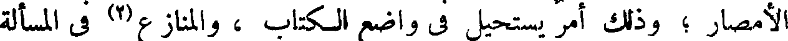
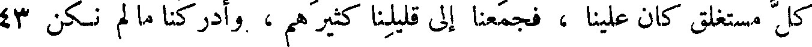
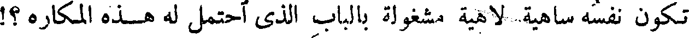
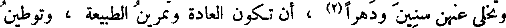
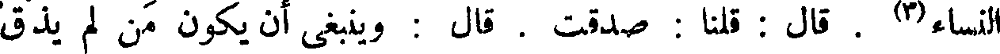

File: 000552.gt.txt (if the image is defective, simply delete all Arabic text and the line will be excluded)

الأمصار ؛ وذلك أمر يستحيل في واضع الكتاب ، والمنازع(2) في المسألة
File: 000553.gt.txt (if the image is defective, simply delete all Arabic text and the line will be excluded)

والجواب . ومناقلة اللسان وهدايته لا تجوزان(3) مجلس صاحبه ، ومبلغ
File: 000554.gt.txt (if the image is defective, simply delete all Arabic text and the line will be excluded)

صوته . وقد يذهب الحكيم وتبقى كتبه ، ويذهب العقل ويبقى أثره .
File: 000555.gt.txt (if the image is defective, simply delete all Arabic text and the line will be excluded)

ولولا ما أودعت لنا الأوائل في كتبها ، وخلدت من عجيب حكمتها ،
File: 000556.gt.txt (if the image is defective, simply delete all Arabic text and the line will be excluded)

ودونت من أنواع سيرها ، حتى شاهدنا بها ما غاب عنا ، وفتحنا بها
File: 000557.gt.txt (if the image is defective, simply delete all Arabic text and the line will be excluded)

كل مستغلق كان علينا ، فجمعنا إلى قليلنا كثيرهم ، وأدركنا ما لم نكن 43
File: 000558.gt.txt (if the image is defective, simply delete all Arabic text and the line will be excluded)

ندركه إلا بهم ، لقد خس(4) حظنا من الحكمة ، ولضعف سببنا إلى
File: 000559.gt.txt (if the image is defective, simply delete all Arabic text and the line will be excluded)

المعرفة . ولو لجأنا إلى قدر قوتنا ، ومبلغ خواطرنا ، ومنتهى تجاربنا
File: 000560.gt.txt (if the image is defective, simply delete all Arabic text and the line will be excluded)

والسلوة . وإلى موت الخواطر . قال : قلنا : صدقت . قال : وينبغي أن
File: 000561.gt.txt (if the image is defective, simply delete all Arabic text and the line will be excluded)

يكون من دعاه الزهد في الدنيا ، وفيما يحتويه النساء مع جمالهن وفتنة
File: 000562.gt.txt (if the image is defective, simply delete all Arabic text and the line will be excluded)

النساك بهن ، واتخاذ الأنبياء لهن ، إلى أن خصى نفسه ، ولم يكرهه عليه
File: 000563.gt.txt (if the image is defective, simply delete all Arabic text and the line will be excluded)
أب ولا عدو ، ولا سباه ساب ، أن يكون مقدار ذلك الزهد هو المقدار الذي
File: 000564.gt.txt (if the image is defective, simply delete all Arabic text and the line will be excluded)

يميت الذ كر لهن ، ويسري عنه ألم فقد وجودهن(1) ، وينبغي لمن 58
File: 000565.gt.txt (if the image is defective, simply delete all Arabic text and the line will be excluded)

كان في إمكانه أن ينشئ العزم(2) ويختار الإرادة التي يصير بها(3) إلى
File: 000566.gt.txt (if the image is defective, simply delete all Arabic text and the line will be excluded)

قطع ذلك العضو الجامع لكبار اللذات ، وإلى ما فيه من الألم ، ومع ما فيه
File: 000567.gt.txt (if the image is defective, simply delete all Arabic text and the line will be excluded)

من الخطر ، وإلى ما فيه من المثلة والنقص الداخل على الخلقة ، أن تكون
File: 000568.gt.txt (if the image is defective, simply delete all Arabic text and the line will be excluded)

الوساوس في هذا الباب لا تعروه ، والدواعي لا تقروه(4) . قال : قلنا :
File: 000569.gt.txt (if the image is defective, simply delete all Arabic text and the line will be excluded)

صدقت . قال : وينبغي لمن سخت نفسه عن السكن وعن الولد ، وعن
File: 000570.gt.txt (if the image is defective, simply delete all Arabic text and the line will be excluded)

أن يكون مذكورا بالعقب الصالح ، أن يكون قد نسي هذا الباب ، إن
File: 000571.gt.txt (if the image is defective, simply delete all Arabic text and the line will be excluded)

كان قد مر منه على ذكر . هذا وأنتم تعلمون أني سملت عيني يوم
File: 000572.gt.txt (if the image is defective, simply delete all Arabic text and the line will be excluded)

خصيت نفسي ، فقد نسيت كيفية الصور وكيف تروع ، وجهلت المراد
File: 000573.gt.txt (if the image is defective, simply delete all Arabic text and the line will be excluded)
منها ، وكيف تراد ، أفما كان(5) [ من كان كذلك ] حريا أن
File: 000574.gt.txt (if the image is defective, simply delete all Arabic text and the line will be excluded)

تكون نفسه ساهية لاهية مشغولة بالباب الذي أحتمل له هذه المكاره ؟!
File: 000575.gt.txt (if the image is defective, simply delete all Arabic text and the line will be excluded)

قال : قلنا: صدقت . قال : أو لو لم أكن هرما(6) ، ولم يكن ها هنا
File: 000576.gt.txt (if the image is defective, simply delete all Arabic text and the line will be excluded)

طول اجتناب ، وكانت الآلة قائمة أليس في(7) أني لم أذق حيوانا منذ ثمانين
File: 000577.gt.txt (if the image is defective, simply delete all Arabic text and the line will be excluded)

( حديث أبي المبارك الصابي )
File: 000578.gt.txt (if the image is defective, simply delete all Arabic text and the line will be excluded)

حدثني محمد بن عباد قال : سمعته يقول - وجرى ذكر النساء ومحلهن
File: 000579.gt.txt (if the image is defective, simply delete all Arabic text and the line will be excluded)

من قلوب الرجال ، حتى زعموا أن الرجل كلما كان عليهن أحرص كان
File: 000580.gt.txt (if the image is defective, simply delete all Arabic text and the line will be excluded)

ذلك أدل على تمام الفحولة فيه ، وكان أذهب له في الناحية التي هي
File: 000581.gt.txt (if the image is defective, simply delete all Arabic text and the line will be excluded)

في خلقته ومعناه وطبعه ، إذ كان قد جعل رجلا ولم يجعل امرأة - قال آبن
File: 000582.gt.txt (if the image is defective, simply delete all Arabic text and the line will be excluded)
عباد ، فقال لنا : ألستم تعلمون أني قد أربيت على المائة ، فينبغي لمن
File: 000583.gt.txt (if the image is defective, simply delete all Arabic text and the line will be excluded)

كان كذلك أن يكون وهن الكبر ، ونفاد الذكر (1) ، وموت الشهوة ،
File: 000584.gt.txt (if the image is defective, simply delete all Arabic text and the line will be excluded)

وانقطاع ينبوع النطفة ، قد أمات حنينه إلى النساء وتفكيره في الغزل ؟!
File: 000585.gt.txt (if the image is defective, simply delete all Arabic text and the line will be excluded)

قال : قلنا : صدقت . قال : وينبغي أن يكون من عود نفسه تركهن مددا ،
File: 000586.gt.txt (if the image is defective, simply delete all Arabic text and the line will be excluded)

وتخلى عنهن سنين ودهرا(2) ، أن تكون العادة وتمرين الطبيعة ، وتوطين
File: 000587.gt.txt (if the image is defective, simply delete all Arabic text and the line will be excluded)

النفس ، قد حط من ثقل منازعة الشهوة ، ودواعي الباءة ، وقد علمتم أن
File: 000588.gt.txt (if the image is defective, simply delete all Arabic text and the line will be excluded)

العادة [ التي ] هي الطبيعة الثانية ، قد تستحكم ببعض عمد هجر لملامسة
File: 000589.gt.txt (if the image is defective, simply delete all Arabic text and the line will be excluded)

النساء(3) . قال : قلنا : صدقت . قال : وينبغي أن يكون من لم يذق
File: 000590.gt.txt (if the image is defective, simply delete all Arabic text and the line will be excluded)

طعم الخلوة بهن ولم يجالسهن متبذلات ، ولم يسمع حديثهن وخلابتهن
File: 000591.gt.txt (if the image is defective, simply delete all Arabic text and the line will be excluded)

للقلوب ، واستمالتهن للأهواء ، ولم يرهن منكشفات عاريات ، إذا تقدم
File: 000592.gt.txt (if the image is defective, simply delete all Arabic text and the line will be excluded)

له ذلك مع طول الترك ، ألا يكون بقى معه من دواعيهن شيء ؟! قال :
File: 000593.gt.txt (if the image is defective, simply delete all Arabic text and the line will be excluded)

قلنا : صدقت . قال : وينبغي أن يكون لمن قد علم أنه مجبوب ، وأن
File: 000594.gt.txt (if the image is defective, simply delete all Arabic text and the line will be excluded)

سببه إلى خلاطهن محسوم ، أن يكون اليأس من أمتن أسبابه إلى الزهد
File: 000595.gt.txt (if the image is defective, simply delete all Arabic text and the line will be excluded)

وإلى التقبض والتخدد(1) ، وإلى الهزال ، وسوء الحال ، فهذا الباب يعرض
File: 000596.gt.txt (if the image is defective, simply delete all Arabic text and the line will be excluded)

للخصيان ، ويعرض أيضا لمعالجي النبات من الأكرة(2) من أهل الزرع
File: 000597.gt.txt (if the image is defective, simply delete all Arabic text and the line will be excluded)

والنخل ، لأنك ترى الخصي وكأن السيوف تلمع في لونه(3) ، وكأنه مرآة
File: 000598.gt.txt (if the image is defective, simply delete all Arabic text and the line will be excluded)

صينية ، وكأنه وذيلة مجلوة ، وكأنه جمارة رطبة ، وكأنه قضيب فضة قد
File: 000599.gt.txt (if the image is defective, simply delete all Arabic text and the line will be excluded)

مسه ذهب ، وكأن في وجناته الورد ، ثم لا يلبث كذلك إلا نسيئات
File: 000600.gt.txt (if the image is defective, simply delete all Arabic text and the line will be excluded)

يسيرة ، حتى يذهب ذلك ذهابا لا يعود ، وإن كان ذا خصب ، وفي عيش
File: 000601.gt.txt (if the image is defective, simply delete all Arabic text and the line will be excluded)

رغد ، وفي فراغ بال ، وقلة نصب .